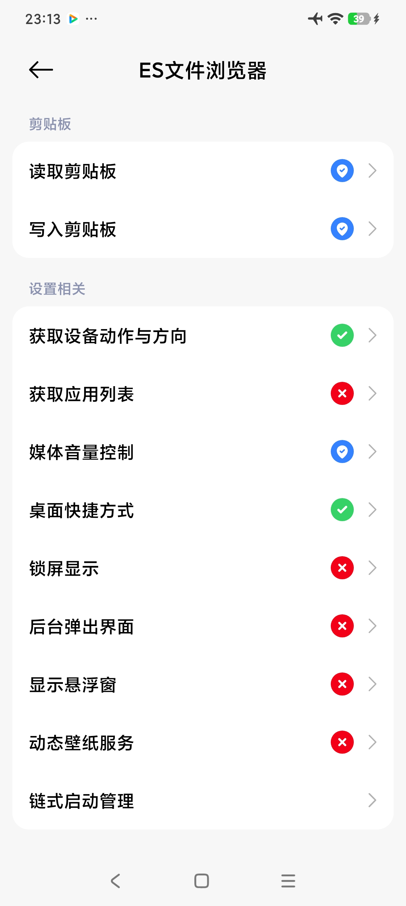
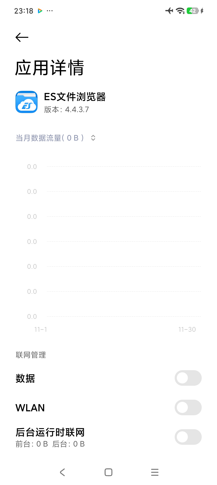

把 CNVCS 的棋谱放到桌面，一键跳到皮卡鱼复盘
不用 root、不用刷机、不用复制粘贴。
这段话的核心我捋成一条线：棋谱在 CNVCS 下，桌面快捷方式做跳板，皮卡鱼软件来复盘。下面是完整成文，直接发出去就行。
---
不用 root、不用刷机：把 CNVCS 象棋的棋谱"放"到手机桌面，一键跳转打开你喜欢的皮卡鱼象棋
先说人话：这件事解决什么问题？
你在 CNVCS 象棋里下了很多盘棋（网棋、人机都行），棋谱会自动存在一个藏得极深的路径里：
/storage/emulated/0/Android/data/com.cnvcs.xiangqi/files/棋谱
这个路径有多深？深到新手机（Android 11 及以上）把 `Android/data` 目录对外部应用锁死了，普通软件根本进不去。所以每次想用别的象棋软件（比如各家作者做的皮卡鱼象棋）复盘，都要翻半天路径、复制粘贴，非常烦。
我们的办法，一句话：用 ES 文件浏览器，把这个棋谱文件夹做成一个手机桌面快捷方式。 之后每天的流程变成：
> 在 CNVCS 下棋 → 保存 → 点桌面上的"棋谱"图标 → 点一盘棋 → 手机弹出"打开方式" → 选你心仪的皮卡鱼象棋 → 直接复盘。
全程不用 root、不用刷机、不用复制粘贴，两三下完事。
什么叫"跳链 / 跳转打开"？（小白版）
"跳链"说白了就是：点一个文件，让另一个软件来打开它。
就像微信里收到一个 PDF，点开时手机会问"用哪个应用打开？"——你选 WPS 或浏览器，文件就"跳"到那个软件里了。棋谱完全一样：
棋谱文件本身是通用的，不是哪家软件独家的；
你点桌面上棋谱文件夹里的某一盘棋；
手机弹出"用哪个应用打开？"的列表；
你选中自己喜欢的皮卡鱼象棋（谁家的都行，不限于某一家）；
这盘棋自动在那个软件里打开，直接进入复盘。
关键就一句话：棋谱在 CNVCS 里"生产"，在你自己喜欢的软件里"享受"。 CNVCS 管下棋，你的软件管复盘。
具体步骤（跟着做就行）
第一步：装好 ES 文件浏览器
装好后先给它开"所有文件访问"权限（Android 11+ 必需，只开这一次，一劳永逸）；
建议顺手在系统设置里关掉 ES 的联网权限——广告立刻消失，用起来安静丝滑。
第二步：找到棋谱文件夹
顺着路径走：`/storage/emulated/0/Android/data/com.cnvcs.xiangqi/files/棋谱`
更省事的走法：ES 首页 → 应用 → 找到"CNVCS 象棋"→ 查看数据目录 → 直接进到 `棋谱` 文件夹。
第三步：把文件夹做成桌面快捷方式
长按 `棋谱` 文件夹 → 菜单里选"发送到桌面 / 创建桌面快捷方式"；
手机桌面上就会出现一个"棋谱"图标。
第四步：以后每天怎么用
在 CNVCS 下棋，网棋、人机都行，下完保存；
点桌面"棋谱"图标，里面的棋谱会一天天自动累积；
点任意一盘 → 弹"打开方式" → 选你喜欢的皮卡鱼象棋 → 复盘。
为什么用 ES，不用 MT 管理器？
不是 MT 不好，是它不适合这个场景：
MT 管理器是给开发者、折腾党用的工具型管理器。它打开文件的流程是"自己内部处理"，没有"用其他应用打开"这一步——所以谱跳不到你的象棋软件上去，这条路在它那儿断了；
ES 文件浏览器正好相反：既有"桌面快捷方式"，也有标准的"打开方式"跳转选择器，这套流程它全包了。
一句话：我们要的就是 ES 的"桌面快捷方式 + 跳转打开"，MT 给不了这步，所以 pass。
为什么不在象棋软件里做个按钮，直接读 CNVCS 的存盘路径？
好问题，答案很现实：技术上绕不过去，不是不想做。
CNVCS 的棋谱在 `Android/data` 里，而新手机把 `Android/data` 对外部应用锁死——你的软件专门去读，系统照样回答"无权"；
就算个别老手机能读，不同品牌、不同系统版本行为还不一样，维护成本极高，而且随时可能被系统进一步收紧；
桌面快捷方式 + 跳链这个方案不碰权限红线、不读别人的数据、系统完全允许，长期稳定。
这就是它最大的价值：绕开锁死的路径，走一条系统永远放行的路。
这样做到底有什么好处？
对使用者：
快：下完棋，桌面两三下打开，不用翻深路径；
稳：路径不用记、不用找，快捷方式永远是那扇"门"；
省事：不用再复制粘贴棋谱到别的软件里；
自动累积：今天下的、明天下的，棋谱一天天自动躺在桌面文件夹里，想复盘哪盘点哪盘；
自由：复盘用哪家皮卡鱼都行，挑复盘功能最好的那款。
对开发者（独立开发者的福音）：
不用费劲开发网络对战、蓝牙对战、同 WiFi 对战——让用户在 CNVCS 里下棋，你的软件只专注"打开棋谱 + 复盘"这两件事，做精；
不用头疼 Android/data 权限——读不到就不读，用跳链绕过去；
用户棋谱天然累积在通向你的软件的入口旁边，粘性自然来；
省下来的开发时间，全部投在棋力和复盘体验上。
注意事项（记住这几条就不踩坑）
第一次必须给 ES 开"所有文件访问"，只开这一次；
建议关掉 ES 的联网权限，广告消失、安静丝滑；
快捷方式指向的是文件夹而不是单个棋谱，棋谱才会自动累积；
弹"打开方式"时，可以选"仅此一次"（每次自己挑软件），也可以选"始终"（固定用某一款）；
换手机后重装 ES、开一次权限、再做一次快捷方式即可，棋谱本身在 CNVCS 里，丢不了。
最后一句总结
棋谱在 CNVCS 下，桌面快捷方式做跳板，皮卡鱼软件来复盘。 一次设置，长期稳定，零复制粘贴——开发者省心，玩家省力，这就是这套玩法的全部意义。
---
示意图

